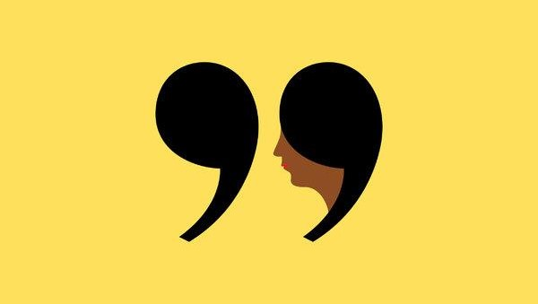

In this section, we take you through some of the ways in which you can write using an academic style which is appropriate and grammatically correct. We provide you with information on what to expect and how to go about achieving a satisfactory academic style, including the use of inclusive language. If you come from a background where English is not your first language, it will be helpful.
Study Skills Acedemic Writing
Brief Introduction in Each Section
Inclusive Language
Importance of how to use inclusive language

Inclusive language is language that does not belittle, exclude, stereotype or trivialise people on the basis of their race, gender or disability. It is important for all members of the university community to recognise and value cultural diversity and understand the importance of using inclusive language as a way of creating an harmonious environment.
Language Construction
Identify and avoid common problems
In this section, common problems relating to language construction have been identified so that students can become aware of these and avoid them in their writing. It includes: - Sestence structure - Parallel stucture - The use and non-use of articles
Formal Sound Writing
Avoid the use of personal pronouns

It is usually the case that in formal writing you avoid the use of personal pronouns. These include I, me, we, us and you. However there are instances in certain disciplines where your lecturer will invite you to use the first person. In reflective journal writing for example, using the first person is appropriate.
Punctuation
Use punctuation marks correctly

Punctuation marks help you to organise your words into clauses and sentences, and hence into identifiable units of meaning. They are the signs that alert readers to the appropriate pauses in your text. These pauses signal where you intend the emphasis and intonation to be placed, and thus how you want the text to be read.
Quoting
Include expert's idea in your writing

Any writing you do at university will require reference to recognised experts or authorities in that particular subject area (discipline). There are three ways of including the ideas of an expert in your text: quoting, paraphrasing, summarising. No matter what you choose to do, you must acknowledge the source of these ideas.
Reference list

You also need to include a list of your references at the end of your essay/report as well as acknowledging your sources in your text. This list is made up of all the publications you have referred to within your assignment, and these are listed in alphabetical order according to the author’s surname (or title if there is no author). This list appears on a separate page at the end of the assignment.